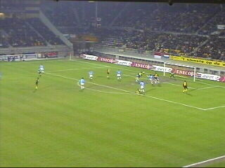

|
Roda JC - Sparta (3-0) 30 maart 2002 |
(4) Victor Kros, doelman van Sparta, laat een
slappe bal van Lawal door zijn handen glippen.
Spandoek in het gastenvak.
Sparta speelde niet in het karakteristieke
rood-witte thuisshirt.
Berglund scoort, maar staat helaas buitenspel.

Na een perfect op maat genomen vrijetrap van
Van Dessel kopt Vicelich prachtig 2-0 in (32).
Vlak voor rust wederom een buitenspeldoelpunt
van Berglund.
In de rust liep het betere benenwerk buiten.
San Francisco 49ers - Miami Dolphins: 21-0 !!
In de tweede helft sloop er nonchalance in het
spel van Roda maar nadat Tchoutang in het
veld kwam was er meteen weer actie. Hier glipt
hij tussen twee verdedigers door en plaatst hij de
bal naar Van Dessel.
Deze kan hem simpel inschuiven: 3-0 (83).
In de 86e min. mag Van der Luer zowaar opdraven.
De wedstrijd is gelopen. Twee voetbalmonumenten
maken een praatje in de middencirkel.
Het was niet zo druk in het supportershome maar
wel mooi.
Henk Muis had een labtop opgesteld om een
compilatie-CD te promoten.
Rodaworld gaat commercieel !!

Toen het supportershome (waar alweer geen
spelers verschenen) leeg begon te raken,
promoveerden we ons naar de northside. Hier
was het gelukkig wel nog gezellig.
De altijd vrolijke Linda.
De meer dan vrolijke heer Hendriks.
Ook de trainer heeft goesting.
Deze is op verzoek van een meisje uit Montfort.
Samen met een paar scouts van RKC die we op
noord ontmoetten eindigde deze plezante avond
te Sjeveemet in volkskroeg 't Pumpje.
©KPD